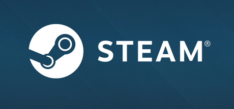

Steam sample texts

Steam is the global leader in online game distribution, selling over 20K games, softwares and video content from hundreds of different publishers and developers.
Working alongside a dedicated team of volunteers, I'm responsible for localizing and proofreading the majority of Steam products to Brazilian Portuguese, including the Steam Client, Steam webpages, Steam help website and support articles, Steam Big Picture and Steamworks.